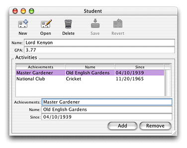

Build the project and run both the client and server applications. Direct to Java Client analyzes the altered EOModel file and generates the user interface based on the new relationship. Now, when you make a new Student record you can also add activities for that student as shown in Figure 3-35.
Figure 3-35 Add activities to new Student record
The rule system considers the Activity entity to be of the entity type "other." ""Other" Entities" describes why, when analyzing the enterprise object model containing the Activity entity, the rule system considers Activity an "other" entity. This allows you to add activities to a Student record by clicking the Add button in form windows for the Student entity.
If you make Activity an enumeration or a main entity using Assistant, the application provides different mechanisms to add activities to student records. Experiment with this by changing Activity's entity type in Assistant and restarting the client application.
Make sure to change the Activity entity back to an "other" entity to successfully complete the other tutorials.